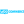
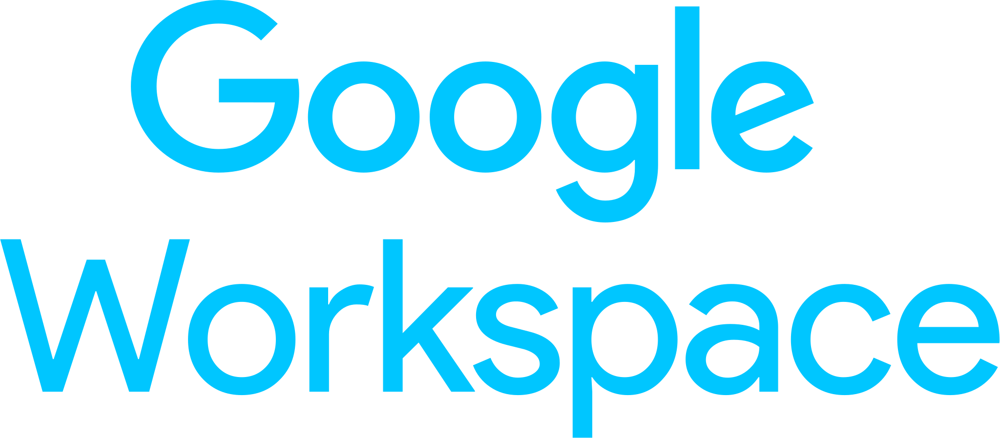
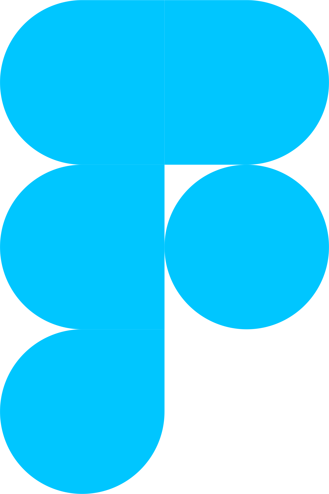

Používám
WordPress

WooCommerce
Google Analytics

Google Workspace

Figma
Student • Tvůrce • Geek • Ecommerce • Weby
Jsem Adam Hornof – student a tvůrce webů, který se nebojí zkoušet nové věci. Věnuji se projektům, které mají smysl, od technické podpory neziskovek až po vlastní e-shopy. Baví mě ecommerce, technologie a čistý webový design.
WordPress
WooCommerce
Google Analytics
Google Workspace
Figma
Pro neziskovou organizaci Šťastný úsměv, z.s. zajišťuji kompletní technickou správu – od běžné údržby webu na WordPressu až po podporu Google Workspace (e-maily, Drive, Kalendář). Pomáhám jim soustředit se na jejich činnost tím, že se starám o technické zázemí.
Jednoduchý web, který během pandemie přehledně zobrazoval statistiky o COVID-19 v Česku. Nabízel upozornění na opatření přímo do telefonu a generátor čestného prohlášení pro přechod mezi okresy. Díky projektu jsem měl možnost osobně komunikovat s tehdejší předsedkyní PSP, Markétou Pekarovou Adamovou.
🗓️ Projekt běžel během let 2020–2022.
Osobní blog o technologiích, digitální produktivitě a nástrojích.
ZobrazitProjektem GameSkill.eu zkouším prodej herních klíčů a bonusového obsahu. Stránka je jednoduchá, rychlá a zaměřená čistě na to, co hráče zajímá.
Rád si popovídám o spolupráci, nápadech i projektech. Ozvi se mi 👇